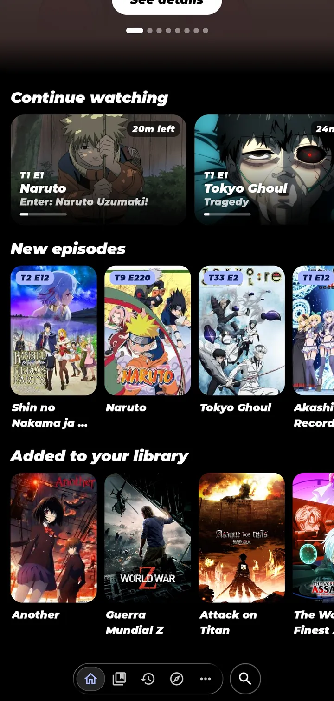
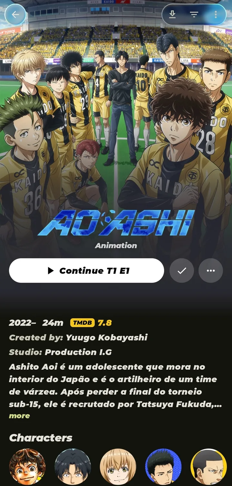
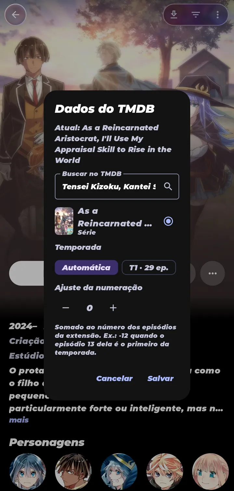
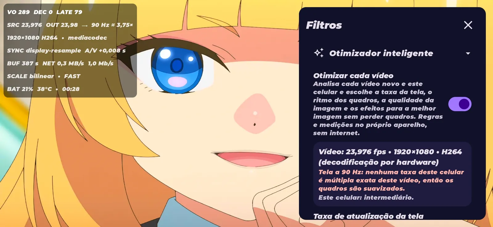

Liquid glass interface
A floating tab bar, glass top bars and capsule tabs that react to touch. The glass adapts to your phone.
 Free · Open source · Android 8+
Free · Open source · Android 8+
Yomira is an anime, series and movie player for Android with a liquid glass interface, a player tuned for smoothness and Discord Rich Presence that needs no login.
Catalogs come from extensions you choose. Yomira makes the rest feel effortless.
A floating tab bar, glass top bars and capsule tabs that react to touch. The glass adapts to your phone.
Match the display to the video, smooth motion, image quality, a per-video optimizer and a heat guard.
Sharpen in real time, or let Enhanced Downloads process episodes into a cleaner copy.
Temperature, exposure, shadows, highlights and cinematic looks, applied after Anime4K and never on subtitles.
A card on your profile while you watch, through the Discord app. No token, no password.
Titles, synopses and stills from TMDB in your language, instead of "Episode 3".
Openings and endings from AniSkip and Anime Skip, matched to the right season, without tracking.
No telemetry, no ads and no accounts. Your library and history stay on your phone.
A catalog-style Home, streaming-style details with artwork and characters, and episodes as cards with real names and stills.






Swipe to see more →

The floating capsule carries a glass lens that slides on a spring and stretches as it moves. Scroll down and the bar shrinks to its icons; scroll back up and it returns.


Built on mpv and tuned for phones, from budget models to flagships.

Real-time Anime4K with a recommendation for your phone, plus offline processing for the best result.
Offline processing is heavy: on mid-range phones an episode can take hours. The built-in speed test shows the real time on your phone.
Yomira talks to the Discord app installed on your phone, so your profile shows a polished card while you watch.
A few minutes, once. After that, Yomira keeps itself up to date.
Updates install over the current version and keep your library. Never uninstall to update.
index.min.json.Yomira does not host or recommend content. Use repositories you trust.
Yes. It is free and open source under the Apache License 2.0, with no ads and no in-app purchases.
No. Yomira hosts no content. Catalogs come from extensions you install from repositories you choose.
No. It talks to the Discord app on your phone through Discord's own SDK. Yomira never asks for or stores your login, password or token.
Android 8.0 or newer on 64-bit (arm64-v8a) or 32-bit (armeabi-v7a) ARM phones. The glass effects adapt to each phone.
No. Every version uses the same package and signature, so it installs over the previous one and keeps everything.
Test builds published before a stable release. Turn on Beta versions in More › About to be offered them, or get them from the Yomira-releases repository.
It runs Anime4K's neural network shaders on every frame of the episode on your phone's GPU. The speed test tells you exactly how long your phone needs.
Free, open source and ready in a minute.
Check the file with SHA256SUMS.txt on the release page. Signing certificate SHA-256: e4d0adb9369971bfbe862554d8e7d418b43c17321e2694719d0efeb0f1d677ce